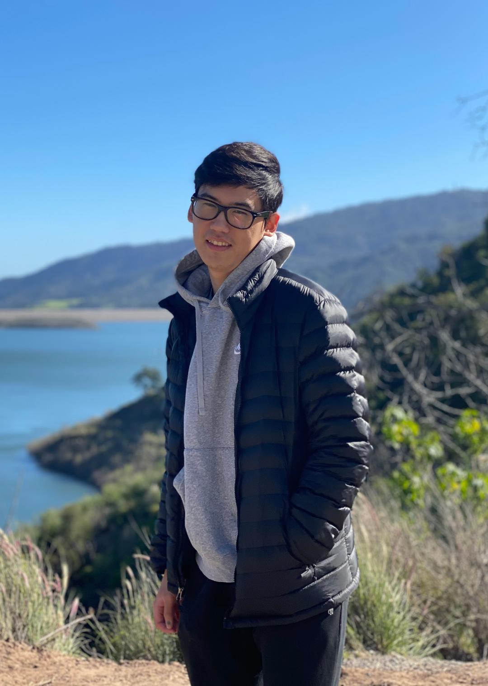

📖 Education
-
Bachelor of Science in Computer Science - University of California, Riverside
GPA: 3.94/4.0 (Expected June 2026)
- Courses: Automata, Discrete Structures, Assembly Language
- Awards: Chancellor's Honors List
💻 Work Experience
-
Undergraduate Research Assistant - Stroke NeuroRecovery Lab, University of California, Riverside (June 2025 - Present)
- Analyze calcium imaging data in PASTa and build a MATLAB-based batch pipeline for preprocessing and event detection.
- Document protocols and generate statistical outputs linking photometry signals to stroke recovery outcomes.
- Customize ETL and signal-processing workflows to reduce noise and improve data quality for scalable analysis.
-
Online Marketing Coordinator - Soul Fashion (eBay and Poshmark) (Sept 2020 - Aug 2023)
- Launched eBay and Poshmark to scale online store operations across the U.S.
- Increased monthly revenue by 25% by managing multiple online sales channels.
- Imported sales data into SQL databases to track inventory and product performance.
- Analyzed weekly sales data to guide restocking decisions and seasonal promotions.
👍 Skills
-
Languages:
- Python
- C++
- MATLAB
- LaTeX
- SQL
- JavaScript
- HTML
- CSS
-
Frameworks:
- Selenium
- PyTorch
-
Tools:
- Insomnia
- PASTa
🔍 Subject Interests
Research and Data Analysis: Works as an Undergraduate Research Assistant at the Stroke NeuroRecovery Lab at UC Riverside, analyzing calcium imaging data in PASTa and building a MATLAB-based batch pipeline for preprocessing and event detection.
Web Development: Built a responsive global weather forecast application using JavaScript, HTML, and CSS, and integrated the OpenWeatherMap API to retrieve real-time forecast data.
Automation and AI: Developed a Snake AI using Python and PyTorch, and created browser-based automation projects with Selenium to simulate user interactions and improve task accuracy.